Published: 2022-08-06
Source link: https://www.cnphotos.net/academy/show-76.html
Young people told me that the web phrase da jiangyou roughly means passing by or drifting through. It describes someone who is not skilled in a field and only came along for the fun. It is a joke, and self-mockery.
Before the pandemic, as an old face in photography, I was often asked to stand on stage and liven up local photo events. These events mostly build a stage for local tourism, a common part of our growth model that turns a profit, protects the environment, and keeps local culture. I went, but since these events mainly promote scenery and customs, while I have spent decades on news and documentary photography, they are two different things. So after the opening ceremony speech, I usually declined the group shoots and wandered on my own. Colleagues teased me, asking what I was wandering alone for. I always answered: tagging along.
At the end of December 2015, I was invited to Jinhua, Zhejiang, for the opening of a photo event, and as usual I wandered alone. I had been to Jinhua twice in the 1980s and 1990s. In the early reform era, its township businesses boomed, and as a reporter for the Economic Daily I came to report on them.
After decades as a photo reporter, tagging along is not aimless. Seeing the real situation is a must.
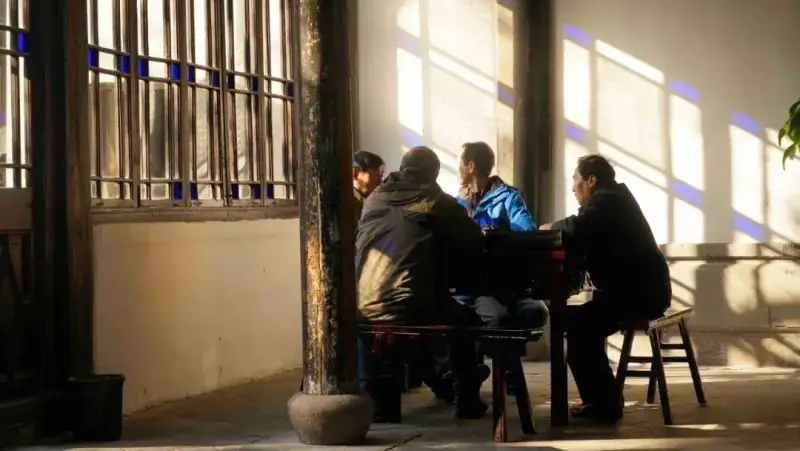
▲ I have a habit. On arriving anywhere, early in the morning I go first to where the locals gather. Whether they drink tea or sit in the sun, I sit nearby or squat with them, and listen to what topic they focus on. Among them are well-traveled locals, and what interests them or what they dislike is often what local people care about. That morning I walked into this teahouse by a Jinhua road. Too bad. They spoke the local dialect, and I understood not a word. Photo by Deng Wei
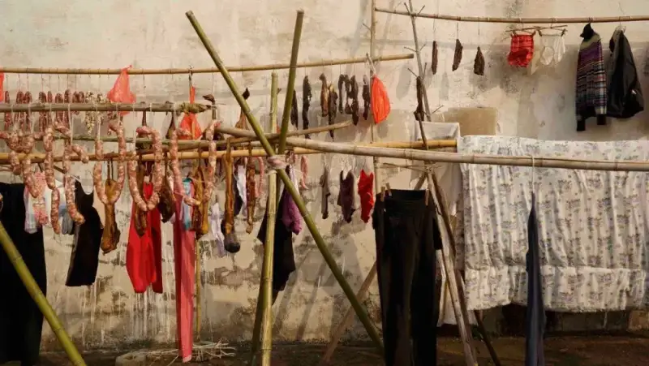
▲ Outside the teahouse, the winter sun was warm. I noticed many families seizing the fine day to dry things. Jinhua is after all the home of cured meats. On every drying rack, alongside clothes and quilts, hung smoked pork and sausages. I thought, what makes a sweet dream? At night, when the smell of smoked meat drifts off the quilt and makes your mouth water, how could the dream not be sweet? Photo by Deng Wei
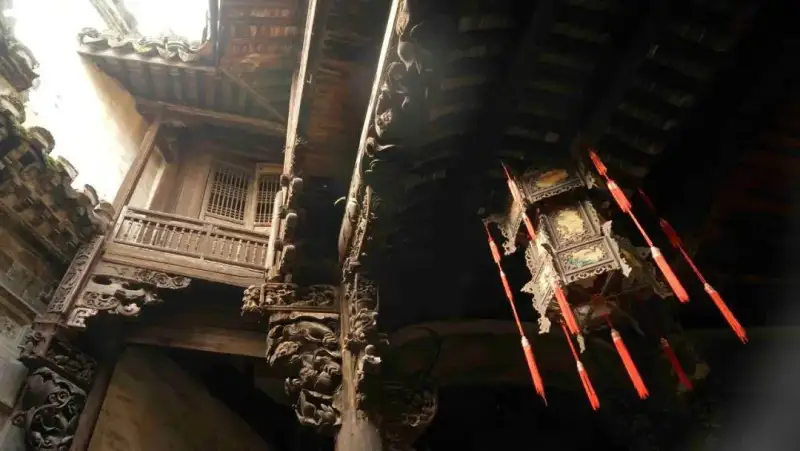
▲ Jinhua was anciently called Wuzhou, with a long history, and old homes and temples are everywhere. The famous Dongyang wood carving, known at home and abroad, is an essential part of the old buildings here, in endless forms and great beauty. Photo by Deng Wei
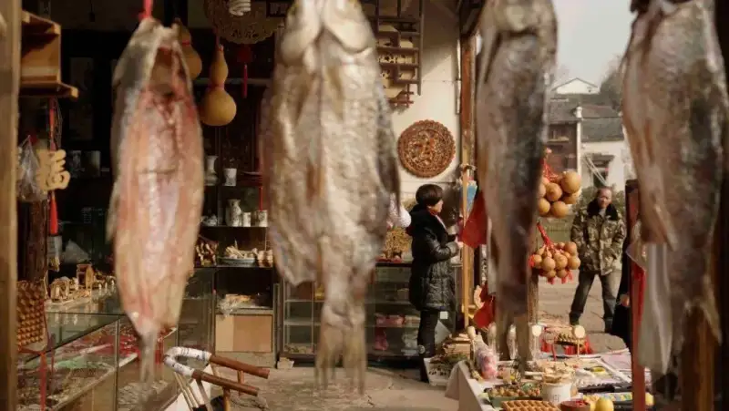
▲ The cured meats of Jinhua, known for Jinhua ham, are truly famous. Look at this small tourist souvenir shop, with smoked meat and fish hanging in its most visible spot. Photo by Deng Wei
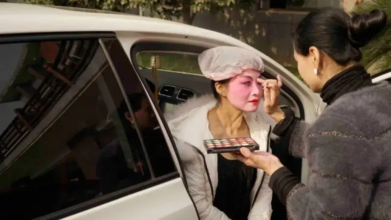
▲ The folk spring and autumn village opera of Jinhua is famous. In the old custom, a village or several villages hired an opera troupe to thank the earth god for the harvest, called putting on the village opera. Now local opera fans perform free for visitors from all sides. Though it is amateur, the performers are meticulous about every part. Photo by Deng Wei
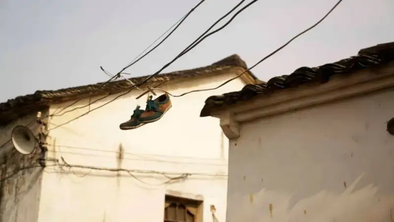
▲ Many old towns of Jinhua keep an easy, casual pace. By the road in this village I saw a pair of shoes drying on a high wire. How did they get up there? And what if that wire, exposed to wind and rain, leaks current? Photo by Deng Wei
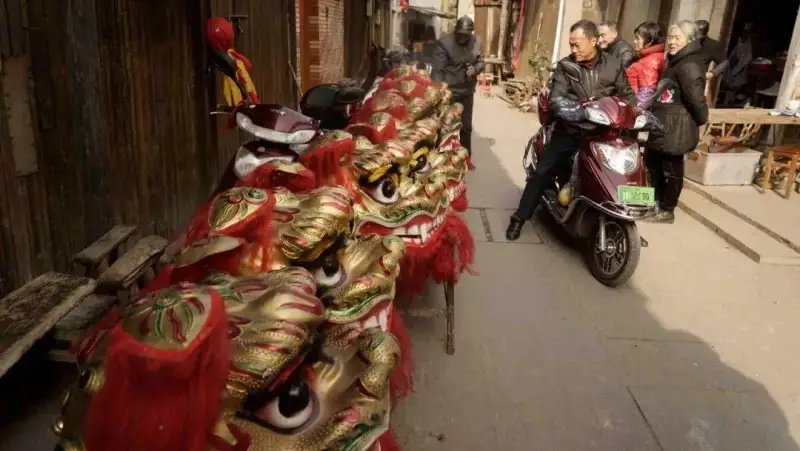
▲ The Jinhua Lantern Festival is a long folk event, and its highlight is the dragon and lantern dance. On the eve, participants compare wares at the workshops that make the colored dragons and lanterns, so that they will stun the crowd when they take the stage. Photo by Deng Wei
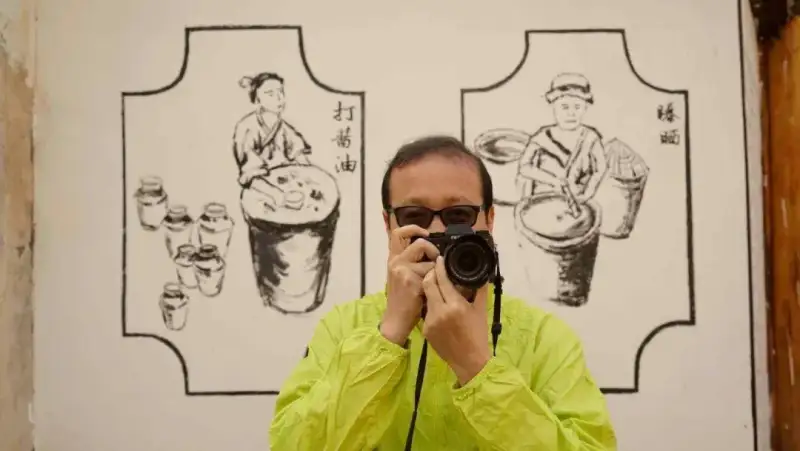
▲ I said I was tagging along, but the colleague in this photo said he was born tagging along. Before retiring he organized many annual photo events for China Photographers News, and we teased each other daily. As it happened, we walked right up to a local soy sauce workshop. I saw the folk painting on the wall, laughed, called him over, and took this photo that truly earns the name tagging along. Photo by Deng Wei
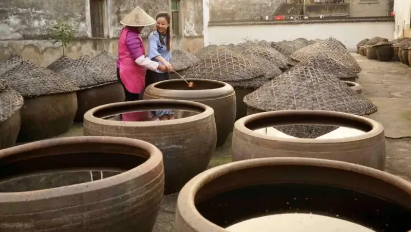
▲ Inside this soy sauce workshop, a worker was teaching a girl how to taste soy sauce, and someone urged me to try it too. No way. After the young girl tastes it the sauce surely gets sweeter, but once this old fellow tastes it, the sauce will not sell! Photo by Deng Wei
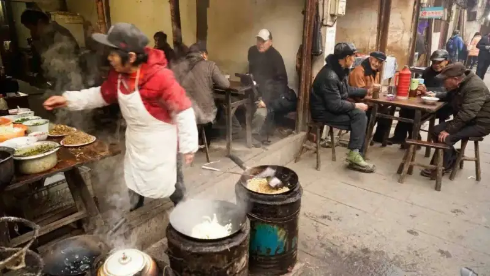
▲ At mealtime, smoke rose through the streets and lanes of Jinhua. No need for a big restaurant. The home cooking at a neighbor's doorway filled the air with the smell of food. Photo by Deng Wei
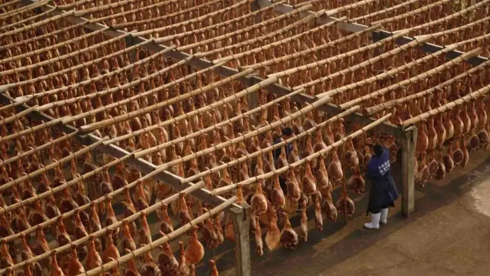
▲ To get back on track, you simply cannot visit Jinhua without seeing how Jinhua ham is made. Historical records show Jinhua ham began in the Tang dynasty. In the two Song dynasties its production grew and became a famous local product. In the Yuan dynasty, the Italian Marco Polo brought the ham-making method to Europe, and it became the origin of European ham. When I came in the 1980s and 1990s, I reported on the ham factory of the time. Today the process is still traditional, but the scale has grown several times over. Photo by Deng Wei